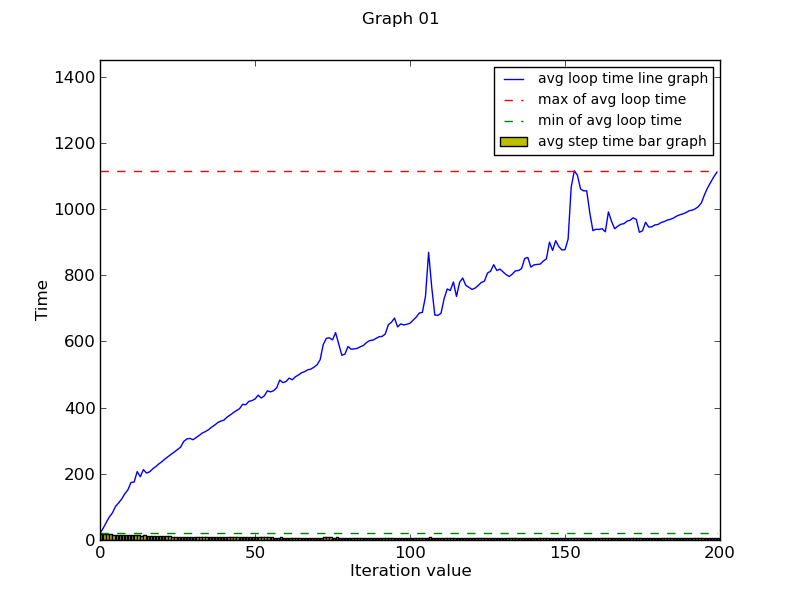
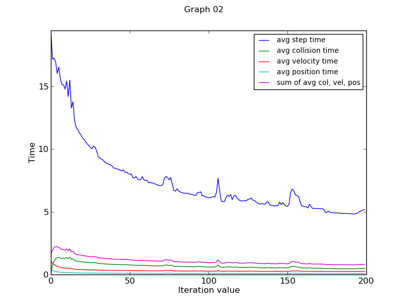
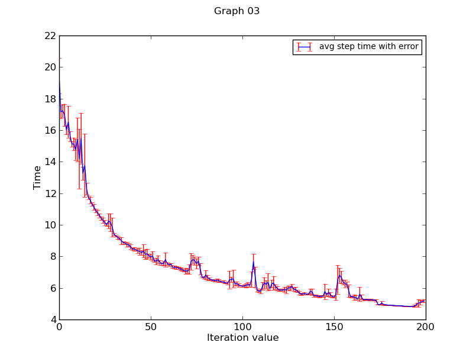

TIMING
The conclusions have been made using first three graphs which covers variation of all kinds of time variables with iteration value.
The graphs have been generated by using a graph generated for iteration value=1500 and 10 reruns.
Loop Time

The loop time describes the time taken by the for loop to run. From the above graph one can conclude that it varies linearly with the iteration value as expected from the system.The for loop time which has been considered is the total for loop time over all the iterations and hence is larger than even the step time.The graph 1 clearly shows that step time graph lies very close to the zero value.
Collision, Velocity and Other Timings

The observations and inferences made are :
- Step time is largest among the collision,velocity ,position times.The order is Step time is greater than sum of the average collision,velocity and position time is greater than average velocity time.However the average collision and position time are very close to each other.
- There is a variation in the nature of graph as well.For small iteration values all the different types of times decrease and the n reaching a minimum rises and then becomes fairly constant.
- The inference that could have been drawn is that initially the number of moving objects are close to zero and we need to fix all the different parameters.However later we could recursively find the values and the number of moving objectsis the same,hence decreasing the time.However the no. of moving objects increase later(like falling of dominoes and balls) and hence we see a slight increase in the graph which later becomes constant as the parameters are easily found and moving objects are also constant.
Variation in Time over Reruns

The error bars in graph clearly show that there is variation in running time in different reruns.This is primarily due to the different processes running through out the system.
Effects of Memory Heavy and CPU Heavy Processes
This time largely depends on the nuber of cores in the system .The observation have been made on the basis of the NSL systems.
Effect of memory and cpu extensive processes(Games and libre office and several other programs and cpying and downloading processes.)
We expected that the system would slow down.However CPU processes didnot affect the timings as much the memory heavy processes .For small iteration values the change is almost nothing but the difference is a little evident at high values like 1500.The differences are not visible in graph as differences are of few milliseconds for the total loop time.
This happened because we were not able to reach complete cpu usage.
However the point to note is that given complete Cpu usage the program will take a lot of time for running(about 40 percent).How ever if we are not able to push to those limits then only memory processes have some effect.
Difference between Time and Get Time Of Day
Number of iterations: 10000
Average time per step is 2.1495 ms
Average time for collision is 0.1606 ms
Average time for velocity updates is 0.1327 ms
Average time for position updates is 0.0606 ms
Total loop time is 25063.6270 ms
real 0m25.073s
user 0m25.085s
sys 0m0.000s
Time has three types:real,user and system.Time we need to see is user time.This time covers(time for user code processes) the entire time from the start of the program to the end and gettimeofday just calculates the difference between the starting and end times of the for loop.Hence the time taken by the time command is greater than get time of day.